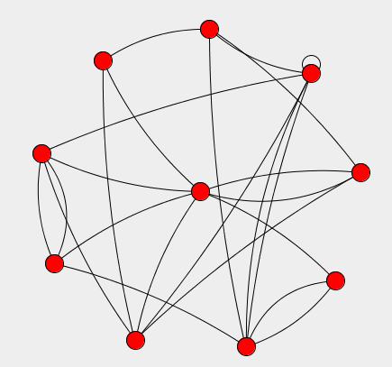

|  |
Preferential Attachment - a demonstration of JUNG and MASON integration
By Maciek Latek 2007
|
[Requires JFreeChart and JUNG]
jung.zip contains a simple example of using MASON in combination with JUNG, a social networks toolkit. The example is a model of simple network dynamics inspired by Barabasi's preferential attachment theory.
To compile and run, you'll need to install both MASON and JUNG. If you'd like to try it out, a jar file that combines all dependencies can be downloaded from here.
The following questions are covered in this demonstration:
- How to describe interactions between MASON agent's with JUNG's network.
- How to display resulting network in a way that is integrated with GuiState.
- How to code Poisson activation of agents.
In addition to that, one way of using MASON's new interfaces to JFreeChart to plot different things (a histogram in this case) is shown.
From within the Model tab following parameters of the simulations can be set:
- N - Number of agents \ nodes.
- T - Number of activations each agent will undergo.
- Temperature - Constant used in Boltzman transformation - the higher it is the bigger the preference for high degree nodes.
- UpdateInterval - How much time is to elapse between subsequent updates of graph display.
Other things, like exact layout algorithm used and maximal degree of nodes, are hard coded.